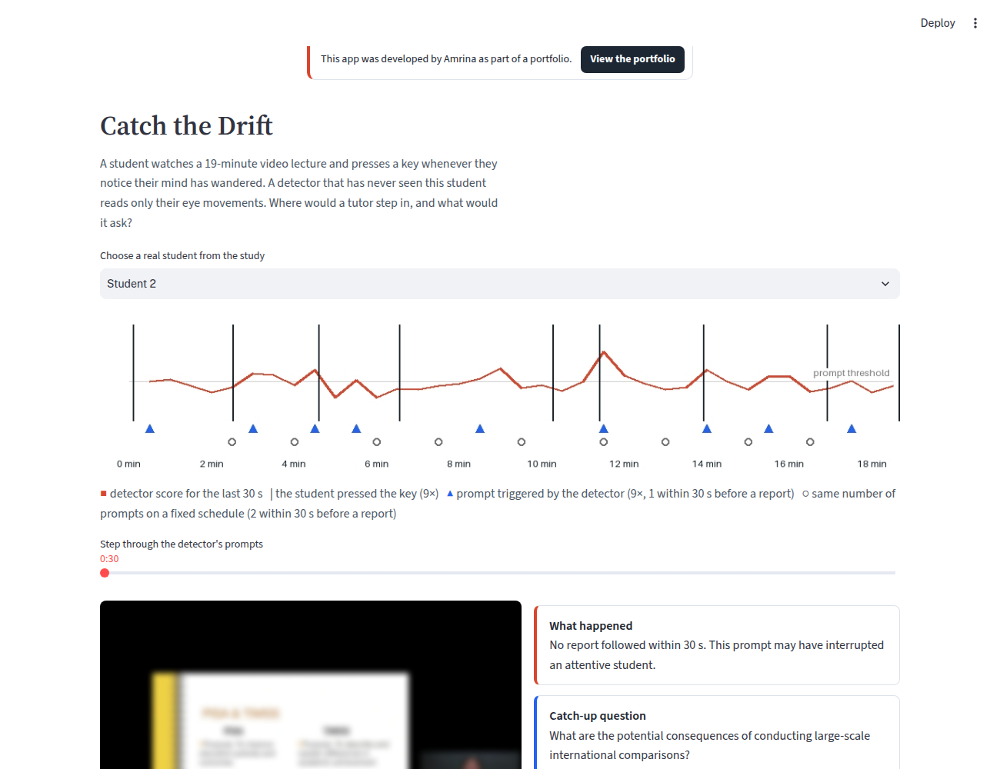

The question
Mind wandering takes up a large share of the time people spend on any task (Smallwood and Schooler, 2015), and video lectures leave nobody to notice it: the video keeps playing while the student is elsewhere. An adaptive learning system could pause and ask a short catch-up question, but only if it knows when. Eye movements are a natural candidate signal, because looking and thinking are tightly coupled while reading or following slides, and webcams can now estimate gaze without special hardware.
So the question has three parts. Can mind wandering during a video lecture be detected from gaze alone, for a student the system has never seen? How early? And if a tutor acts on the detector, does it step in at better moments than a tutor that simply asks at fixed times?
The nine hypotheses, features, models and tests were written down and committed before any model was fitted. Three deviations and two exploratory checks are logged in the same file.
Data and methods
Video lectures: Wandering Eyes (Zhang, Miller, Sun and Cortina, 2020; OSF, CC-BY 4.0). 143 undergraduates watched a 19-minute Education or 22-minute Genetics lecture (slides plus instructor) while an Eye Tribe tracker recorded their gaze at 60 Hz. Half were asked four times, at a beep, whether their mind had wandered (272 answers, 87 yes). The other half pressed a key whenever they noticed it (815 presses). Everyone took a short test before and a longer one after.
Reading: ReMind (Sun, 2025; OSF, CC-BY 4.0). 45 readers marked where in a text their mind had started to wander; the authors provide gaze features for the 2 seconds before each onset and before matched control points.
- Windows and labels
- For each report I take the 30 seconds of gaze before it. For key presses, the comparison windows are every other 30 seconds of the lecture that stay clear of a press. These are "not reported" rather than certainly attentive, which is a known weakness of self-reports.
- Twelve gaze features
- Fixation rate; mean, median and spread of fixation durations; share of long fixations; share of looking at the instructor rather than the slides (screen regions taken from the authors' own analysis); share off the video; how scattered fixations are on the slides; size and variability of eye jumps; share of mostly horizontal jumps, which signals reading; and how much of the window the tracker captured.
- Models
- Logistic regression (primary) and a random forest on the features; a small recurrent network (GRU) that reads the raw sequence of fixations in each window.
- Person-independent testing
- Every score comes from a model that never saw that student: leave-one-student-out, or ten folds split by student. Significance by 1,000 label shuffles; confidence intervals by resampling students.
- The tutor simulation
- Walk through each lecture in 30-second steps. The triggered tutor prompts when the detector score is in the top 20% and at least a minute has passed since its last prompt. The fixed tutor sends the same number of prompts, evenly spaced; a random tutor sends them at random times. A prompt counts as well timed if the student reports drifting within the next 30 seconds.
- Catch-up questions
- For each of the 22 paragraphs of the Education lecture script, gpt-4o-mini wrote one short question and an answer key using only that paragraph. A moment in the video is matched to a paragraph by word count, which is approximate. The demo shows these stored questions and makes no model calls.
Results
The detector does not work. With summary features of 30 seconds of gaze, students who were about to report mind wandering could not be told apart from other moments (AUC 0.49 for key presses, 0.50 for probes; 0.50 is chance).
The tutor beat a fixed schedule, but not chance. Triggered prompts were better timed than evenly spaced ones, as predicted, but no better than prompts at random times. The fixed schedule was simply unlucky.
The order of fixations may carry what the summaries lose. The sequence model reached AUC 0.57, the one video result clearly above chance. It needs confirming on new data.
In reading, the signal is there but small. On a second dataset, gaze in the 2 seconds before readers' mind wandered began was distinguishable from control moments (AUC 0.55, p = .001). Fixation count pointed in opposite directions in reading and in the lecture, so the features do not carry over directly.
How well each model told mind wandering apart from other moments
| Hypothesis | Result | Verdict |
|---|---|---|
| H1 Gaze detects mind wandering at a probe | AUC 0.50 [0.42, 0.59], p = .38 forest 0.58 | Not supported |
| H2 Gaze detects the 30 s before a key press | AUC 0.49 [0.42, 0.56], p = .57 forest 0.54 | Not supported |
| H3 Detection weakens as the window moves earlier | 0.49, 0.48, 0.44, 0.45, 0.47 at 0–30 s; ρ = −.60, p = .29 | Not supported |
| H4 A sequence model gains no more than 0.02 | GRU 0.57 vs 0.49 (+0.09) | Not supported, in the interesting direction |
| H5 A detector transfers to the other lecture | 0.48 and 0.45 (within: 0.53 and 0.59) | Not supported |
| H6 More predicted drift, lower post-test | partial r = +.16, n = 140 | Not supported (wrong sign) |
| H7 Triggered prompts are better timed than fixed | 27% vs 21%, p = .026 random: 24%, p = .36 | Supported, but not better than random |
| H8 Gaze detects the onset of mind wandering in reading | AUC 0.55, p = .001 with pupil and blink: 0.54 | Supported, weakly |
| H9 Features point the same way in reading and video | dispersion agrees; fixation count, jump size disagree | Descriptive |
Strict data-quality rules cost a lot: windows where the tracker captured less than half the time were dropped as planned, which removed 38% of probe windows (168 of 272 remain, from 49 of 68 students) and 28% of key-press windows (1,698 of 2,349, from 71 of 75 students). The detector's coefficients are hard to read for that reason too: the largest is tracking coverage itself, which says more about the tracker than about attention.
Share of tutor prompts that came within 30 s before a student reported drifting
What I take from it
A consumer tracker at 60 Hz, a handful of gaze statistics and a person-independent test is a hard setting, and here it is not enough. That is useful to know before building a tutor around it: a system that interrupts students on this signal would interrupt them at random. The comparison with the fixed schedule also shows why a random baseline belongs in every such evaluation. Without it, H7 would have looked like a success.
Two things are worth following up. The sequence model's advantage suggests that the order of fixations (for example, a drift from slides to the instructor and back without reading) holds information that averages throw away. And the self-report labels limit everything here: the comparison windows certainly contain mind wandering that nobody noticed, which pulls every detector towards chance.
The demo
The demo replays any of the 33 students who watched the Education lecture in the key-press group. It shows the detector score over the whole lecture, the student's own reports, where the triggered and fixed tutors would have prompted, the fixations in the 30 seconds before each prompt, and the catch-up question the tutor would ask at that point. It says plainly when a prompt would have interrupted a student who reported nothing.

Limits
- Self-reports capture only the drifting a student noticed; probes capture only four moments per student.
- One dataset, one tracker model, two lectures, undergraduates at one university.
- The tutor simulation measures timing only. Whether a catch-up question helps learning would need a study with students.
- The GRU result is a single run with a fixed seed, and its interval was computed after seeing the results.
- Paragraphs are matched to video time by word count, not by timestamps.
Data and references
Smallwood, J., and Schooler, J. W. (2015). The science of mind wandering: Empirically navigating the stream of consciousness. Annual Review of Psychology, 66, 487–518.
Zhang, H., Miller, K. F., Sun, X., and Cortina, K. S. (2020). Wandering eyes: Eye movements during mind wandering in video lectures. Applied Cognitive Psychology, 34(2), 449–464. Data: osf.io/ptj75, CC-BY 4.0.
Sun, H. (2025). ReMind: A retrospective self-report paradigm for studying mind-wandering onset during reading [Data set]. osf.io/ajme7, CC-BY 4.0.